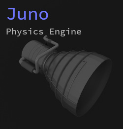

 My current project I am working on is a real-time physics simulation renderer using modern openGL (4.5). Although it is primarily intended for particle systems and simple geometry + textures, it also has a built-in wavefront file parser for loading 3D objects. You can view the project here.
"Jim's Physics Library" is my supporting vector math library for doing computational physics projects, but also has a few other useful utilities.
ORBT is one of my earlier projects which I used to first learn OpenGL. It supports many of the basic core rendering features that Juno now has, but was more of a learning experience and less of an 'application'.
Haskmat is essentially the Haskell vector math library that no one asked for. It also includes data structures like linked lists, queues, and some other things that also probably don't belong in Haskell. :P
In my Intro to Computational Physics class I got to work on a lot of cool projects, like n-body simulation: